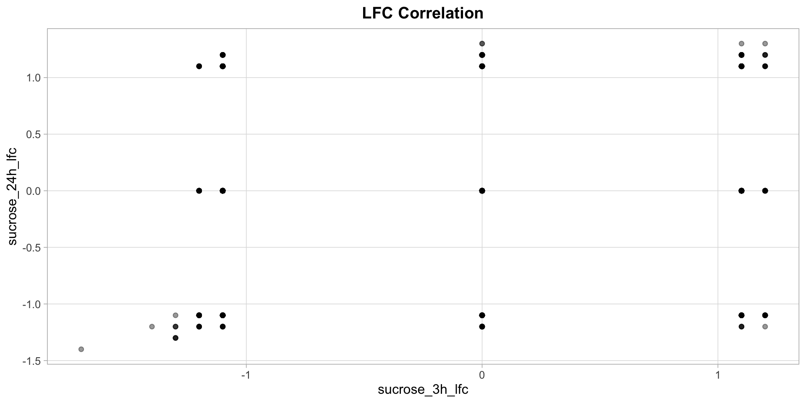
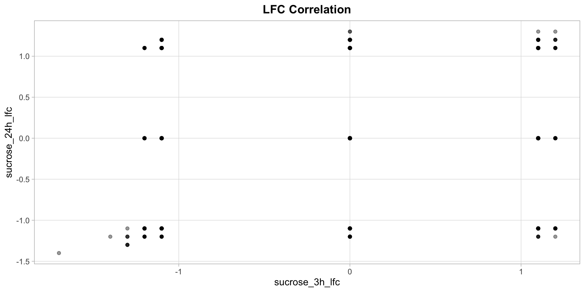
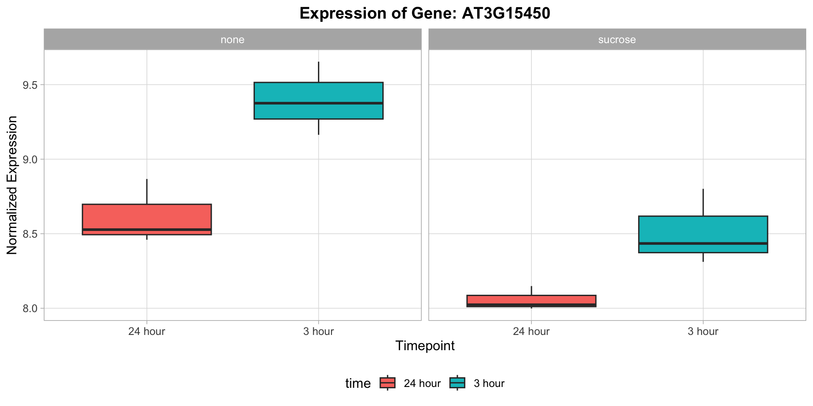
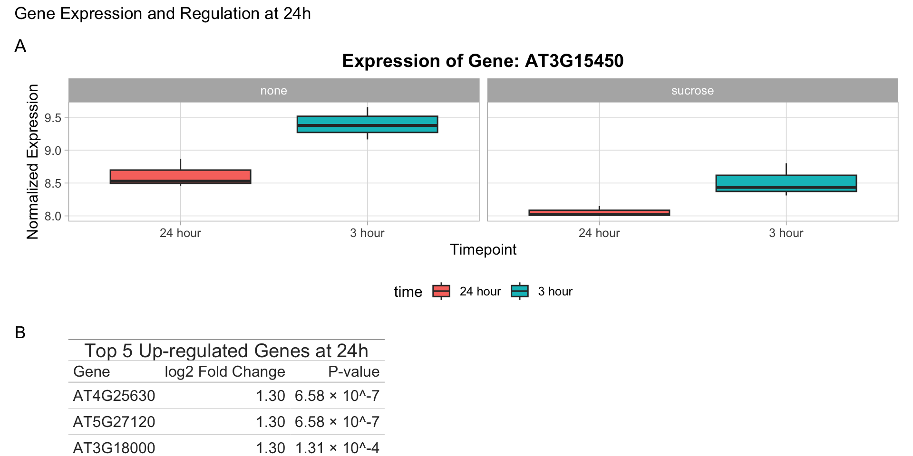
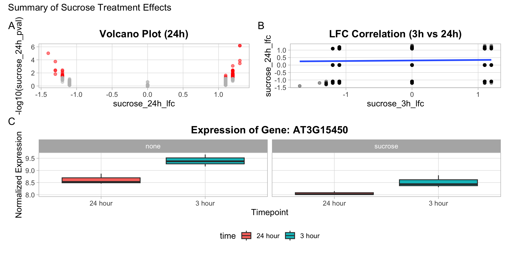

Upon completing this exercise block, you will be able to:
ggplot2.gt package.ggplot2 plots and gt tables into a single, cohesive figure using patchwork.To ensure a consistent style across all our figures, let’s create a custom theme function.
A. Create a function called theme_course() that returns a theme object.
B. Inside the function, start with theme_light() and then modify it to do the following:
- Make the plot title bold and centered.
- Move the legend to the bottom.
- Remove minor panel grid lines.C. Apply your new theme_course() to a simple scatter plot to test it.
Solution

Now, let’s create a more specific plot for our final figure.
A. Find the Gene ID for the most significantly down-regulated gene at the 24h timepoint.
B. Create a dataframe for plotting that contains the expression values for this gene, along with the sample annotations (compound and time).
C. Make a boxplot of expression for this gene.
- `time` should be on the x-axis.
- The plot should be faceted by `compound`.
- The boxes should be filled based on the `time`.D. Apply your theme_course() to this plot and give it an appropriate title.
Solution

gtLet’s summarize the top differentially expressed genes in a table.
A. Create a dataframe containing the top 5 up-regulated genes at 24h with a p-value < 0.05. The dataframe should only contain the Gene_ID, sucrose_24h_lfc, and sucrose_24h_pval columns.
B. Use gt() to create a table from this dataframe.
C. Style the table:
- Add a title: "Top 5 Up-regulated Genes at 24h".
- Relabel the columns to be more readable (e.g., "Gene", "log2 Fold Change", "P-value").
- Format the `log2 Fold Change` column to 2 decimal places.
- Format the `P-value` column using scientific notation with 2 decimal places.Solution
| Top 5 Up-regulated Genes at 24h | ||
|---|---|---|
| Gene | log2 Fold Change | P-value |
| AT4G25630 | 1.30 | 6.58 × 10−7 |
| AT5G27120 | 1.30 | 6.58 × 10−7 |
| AT3G18000 | 1.30 | 1.31 × 10−4 |
| AT3G44750 | 1.30 | 3.49 × 10−4 |
| AT3G57150 | 1.20 | 8.36 × 10−4 |
Now let’s combine the plot from Exercise 2 and the table from Exercise 3 into a single figure.
A. Use patchwork to combine p_boxplot and gt_up_genes.
B. The plot should be on top and the table on the bottom.
C. Adjust the layout so that the plot takes up roughly twice as much height as the table. (Hint: use plot_layout(heights = ...)).
D. Add an overall title and tags to the combined figure.
Solution

Let’s combine multiple plots from previous exercises to showcase different patchwork layouts.
A. Recreate the 24h volcano plot from Exercise 4 of Block 4. Apply your theme_course() and store it in an object named p_volcano.
B. Recreate the LFC correlation plot (3h vs 24h) from Exercise 1 of Block 4, which includes a regression line. Apply your theme_course() and store it in an object named p_correlation.
C. Create a nested layout:
- Place `p_volcano` and `p_correlation` side-by-side.
- Place `p_boxplot` (from Exercise 2 of this block) underneath the other two.
- Add a title and tags to the final composition.Solution

Tip
R version 4.5.1 (2025-06-13)
Platform: aarch64-apple-darwin20
Running under: macOS Tahoe 26.1
Matrix products: default
BLAS: /Library/Frameworks/R.framework/Versions/4.5-arm64/Resources/lib/libRblas.0.dylib
LAPACK: /Library/Frameworks/R.framework/Versions/4.5-arm64/Resources/lib/libRlapack.dylib; LAPACK version 3.12.1
locale:
[1] en_US.UTF-8/en_US.UTF-8/en_US.UTF-8/C/en_US.UTF-8/en_US.UTF-8
time zone: Europe/Zurich
tzcode source: internal
attached base packages:
[1] stats graphics grDevices datasets utils methods base
other attached packages:
[1] dplyr_1.1.4 patchwork_1.3.2 gt_1.1.0 ggplot2_4.0.0
loaded via a namespace (and not attached):
[1] Matrix_1.7-3 gtable_0.3.6 jsonlite_2.0.0
[4] compiler_4.5.1 BiocManager_1.30.26 renv_1.1.5
[7] tidyselect_1.2.1 xml2_1.4.0 splines_4.5.1
[10] scales_1.4.0 yaml_2.3.10 fastmap_1.2.0
[13] lattice_0.22-7 R6_2.6.1 labeling_0.4.3
[16] generics_0.1.4 knitr_1.50 tibble_3.3.0
[19] pillar_1.11.1 RColorBrewer_1.1-3 rlang_1.1.6
[22] xfun_0.53 fs_1.6.6 sass_0.4.10
[25] S7_0.2.0 cli_3.6.5 withr_3.0.2
[28] magrittr_2.0.4 mgcv_1.9-3 digest_0.6.37
[31] grid_4.5.1 nlme_3.1-168 lifecycle_1.0.4
[34] vctrs_0.6.5 evaluate_1.0.5 glue_1.8.0
[37] farver_2.1.2 rmarkdown_2.30 tools_4.5.1
[40] pkgconfig_2.0.3 htmltools_0.5.8.1